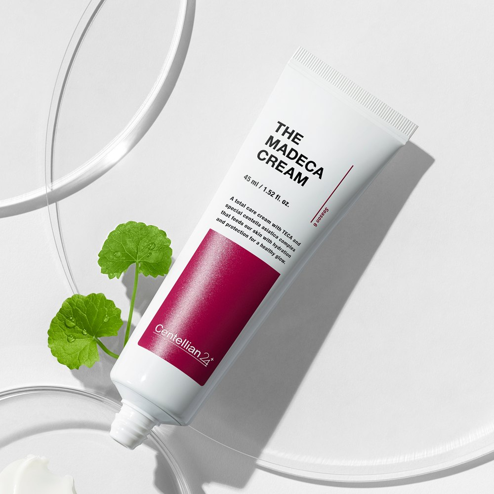
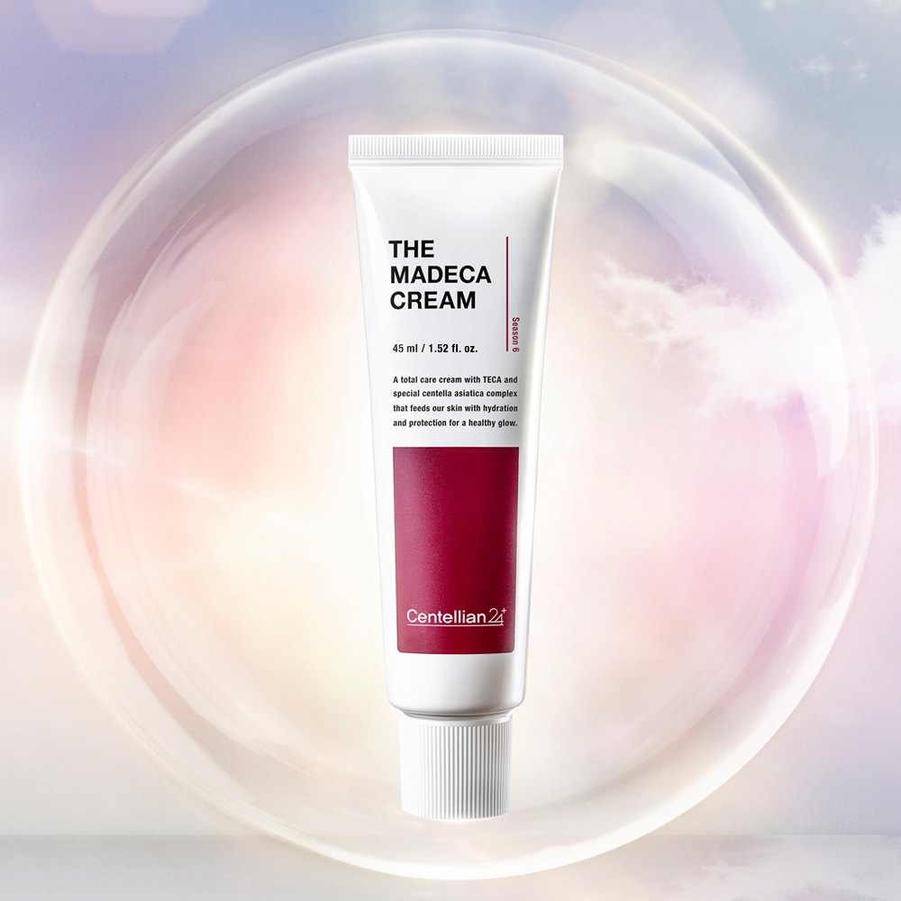
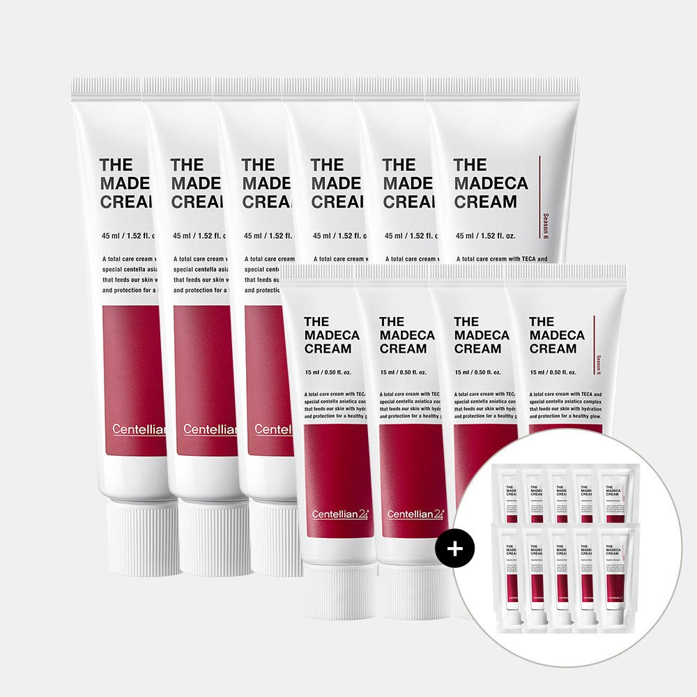
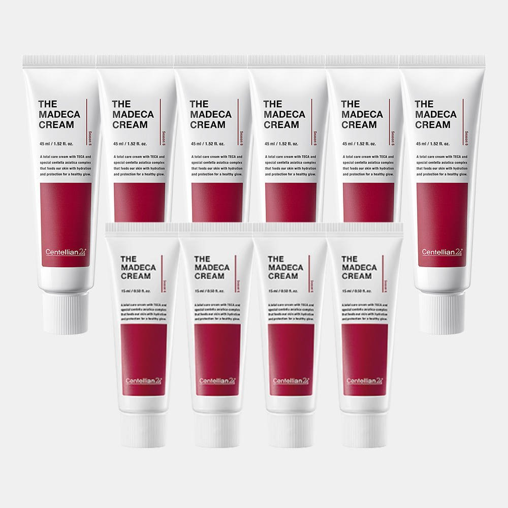

Centellian24 The Madeca Cream Review at a Glance
This Centellian24 The Madeca Cream review looks at the cream many Koreans simply call "Madeca cream." It comes from Dongkook Pharmaceutical (동국제약), the drugmaker best known in Korea for Madecassol ointment, and it's built around the same plant: Centella asiatica, or cica. The current Season 6 formula launched in November 2021, and the line had sold more than 27 million units by August 2021, according to the brand.
So is it just good marketing, or a cream worth trying? Here's what's in it, how it feels and who it suits.

What's Inside: TECA and Friends
The headline ingredient is TECA, a standardized centella extract containing madecassic acid, asiaticoside and asiatic acid. Season 6 adds more centella and barrier care:
| Ingredient | What It Is | Why It's There |
|---|---|---|
| TECA | Titrated extract of Centella asiatica | Core soothing complex |
| Centella protein, oil, ferment | More centella-derived ingredients | Extra soothing and moisture |
| Vita-Madeca | Ascorbyl asiatate (vitamin C + centella compound) | Brightening support |
| Ceramide NP, panthenol | Barrier lipids and vitamin B5 | Helps skin hold moisture |
| Niacinamide | Vitamin B3 | Brightening (functional ingredient) |
| Sodium hyaluronate | Hyaluronic acid salt | Hydration |


Texture, Scent and Daily Feel
The cream is soft and milky, somewhere between a lotion and a classic rich cream. It spreads easily, sinks in within a minute or two and leaves skin feeling comfortable rather than greasy. The scent is light and herbal. It sits well under sunscreen and makeup, and on dry nights you can add a second thin layer.
Korean reviewers often use it as a "reset" cream when skin feels tight or irritated after peels, travel or cold, dry weather.
Key Details
| Item | Details |
|---|---|
| Brand | Centellian24 (센텔리안24) · Dongkook Pharmaceutical, Korea |
| Product | The Madeca Cream, Season 6 |
| Launched | November 2021 |
| Korean status | MFDS dual-function cosmetic: brightening + wrinkle |
| Brand tests | Sensitive- and acne-prone-skin tested; Dermatest 'Excellent' |
| Korean sets | 45ml tubes + 15ml minis (home-shopping bundles) |
| US Amazon | 50ml / 1.7 fl oz single tube |


Photo note: These are the 5 real product photos from the Korean listing. We didn't add any AI-generated images.
How It Compares to Other Creams
| The Madeca Cream | Madeca Cream Tight Lifting | Basic Drugstore Moisturizer | |
|---|---|---|---|
| Main job | Soothing, barrier, brightening + lines | Firming care | Hydration |
| Centella | TECA + centella protein/oil/ferment | TECA-based | Usually none |
| Texture | Soft, milky cream | Richer cream | Varies |
| Best for | Sensitive or stressed skin | Mature skin | Simple routines |
Pros & Cons
✅ Pros
- Made by a Korean pharmaceutical company with decades of centella experience.
- TECA, ceramide NP and niacinamide in one gentle cream.
- Comfortable texture that works morning and night.
- Korean functional-cosmetic status for brightening and wrinkles.
⚠️ Cons
- Changes are gradual, not dramatic.
- US tube size (50ml) differs from Korean sets.
- Could feel heavy on very oily skin in summer.
Who It Suits (and Who Should Skip It)
- Great for: Dry, sensitive or easily irritated skin that needs a calm daily cream.
- Great for: Anyone wanting gentle brightening and fine-line care without retinol.
- Great for: Travelers whose skin gets stressed by flights and dry hotel air.
- Maybe skip: If you're allergic to centella, or you only like oil-free gels.
The Madeca Cream FAQ
What is Centellian24 The Madeca Cream?
It's a centella (cica) face cream from Centellian24, the skincare brand of Korean drugmaker Dongkook Pharmaceutical. The Season 6 formula, launched in November 2021, uses TECA (titrated extract of Centella asiatica) with centella protein, oil and ferment, Vita-Madeca, ceramide NP and niacinamide.
Is it good for sensitive skin?
The brand says it was tested on sensitive and acne-prone skin and earned a Dermatest 'Excellent' rating. It's a gentle, soothing cream for most people, but anyone with known plant allergies should patch test first.
Does it help with dark spots and wrinkles?
In Korea it's registered with the MFDS as a dual-function cosmetic for brightening and wrinkle improvement. That means it's allowed to make those claims, but it's a cosmetic, not a treatment: think gradual, subtle changes with daily use.
Why is the size different on Amazon?
Korean home-shopping sets usually come as 45ml tubes plus 15ml minis. The US Amazon listing we link is a single 50ml (1.7 fl oz) tube, so compare price per ml.
Centellian24 The Madeca Cream 50ml
Dongkook Pharmaceutical's centella cica cream with TECA, sold on US Amazon.